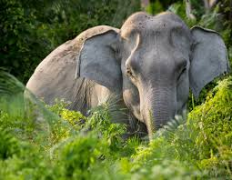
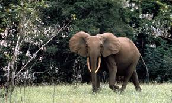

Elephants are large mamals, three types of these mamals exist on Earth:
We can differentiate between African and Asian elephants:
African elephants usually have the shape of their ears like the map of africa while Asian elephants have ears that are similar to the shape of India.
African elephants have much bigger ears that reach up and over the ears, this does not occur in asian elephants.
FOR MORE INORMATION ON ELEPHANTS CLICK:here